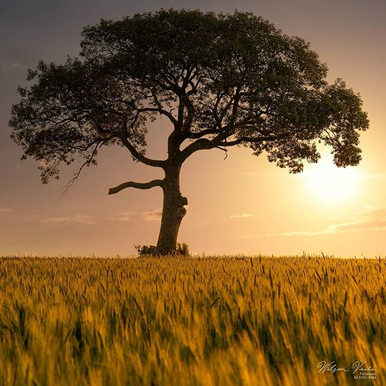
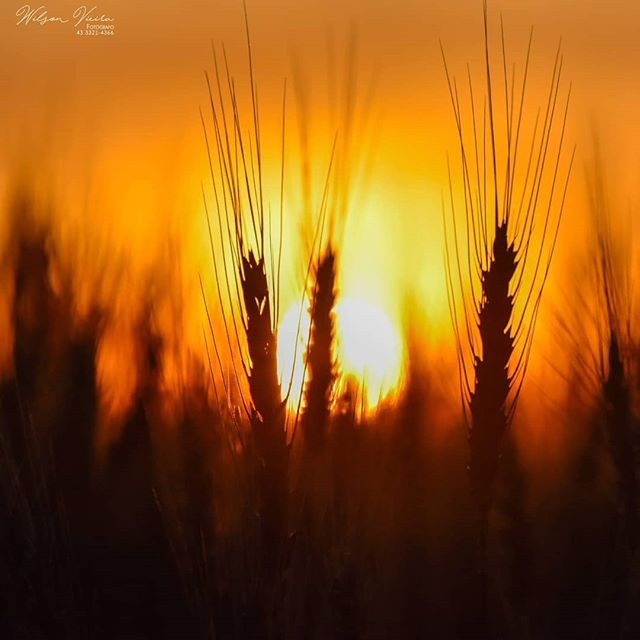

Quem Somos
Na fazenda Gotardo, são utilizadas as mais novas e modernas tecnologias disponíveis no mercado para o cuidado da plantação, sustentabilidade e rodízio da plantação, aproveitando ao máximo os insumos e as sementes, através do Rodízio da plantação.
Somos uma família que há gerações une tradição e inovação para entregar produtos de altíssima qualidade à mesa dos nossos clientes. Nossa missão é produzir com responsabilidade, cuidando da terra e do bem-estar dos animais.



Nossa Missão
Produzir alimentos de qualidade premium com responsabilidade ambiental e social, fortalecendo o agronegócio brasileiro e levando o sabor da terra brasileira para o mundo.
Tecnologia no Campo
Utilizamos drones para monitoramento das plantações, sistemas de irrigação inteligente, controle de rebanho por tecnologia RFID e análise de solo computadorizada.
